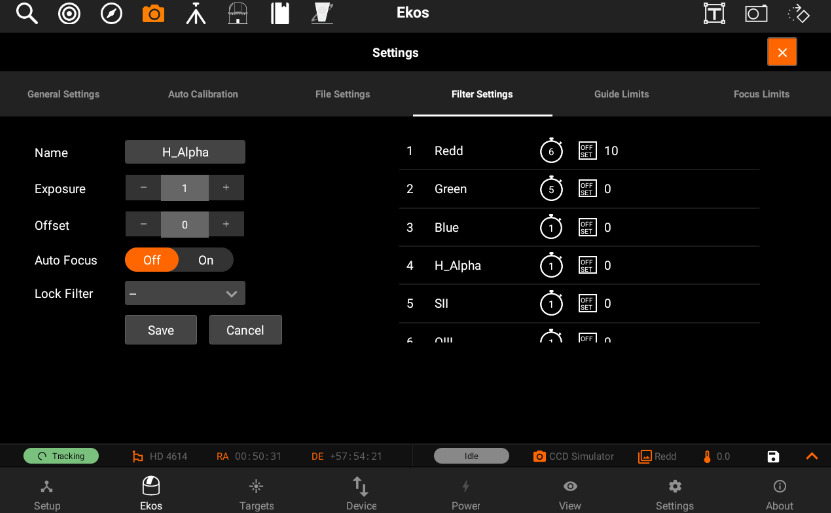
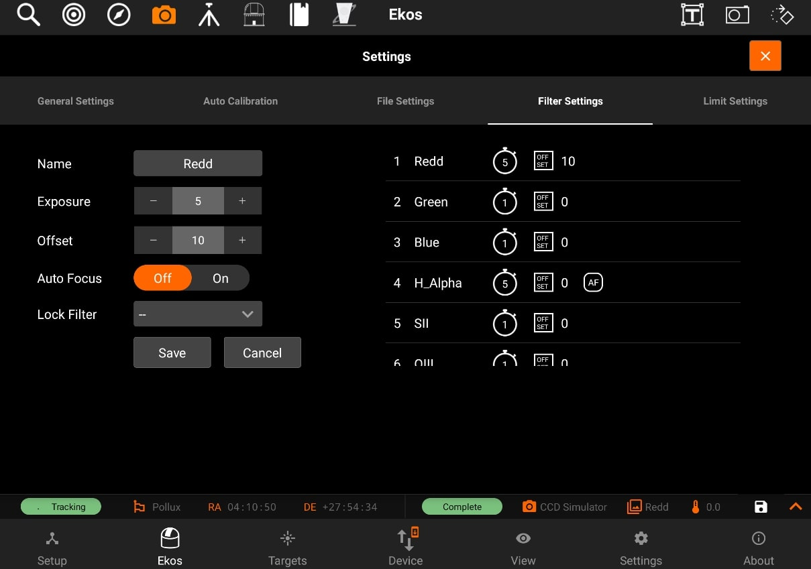

Filters
Filter Settings
You can edit filters by tapping on the Filter button. The filter settings page will open and allow you to edit filter settings for each filter of the filter wheel selected in the drop-down menu.
Configure settings for each filter individually:
- Name: Filter Name
- Exposure: Set exposure time used when performing focus under this filter. By default, it is set to 1 seconds.
- Offset: Set relative offsets. Ekos will command a focus offset change if there is a difference between the current and target filter offsets. For example, given the values in the example image to the right, if the current filter is set to Red and next filter is Green, then Ekos shall command the focuser to Focus In by +300 ticks. Relative positive focus offsets denote Focus Out while negative values denote Focus In.
- Auto Focus: Check this option to initial AutoFocus process whenever the filter is changed to this filter.
- Lock Filter: Set which filter should be set and locked when performing autofocus for this filter.
Let's take an example. Suppose the capture sequence is running and the current filter is Green, so the relative already offset is set to +300. The next image in the sequence uses Hydrogen Alpha (H_Alpha) so before Ekos captures the next frame, the following actions take place:
- Since Lumonisity is specified as the locked filter and auto-focus is checked, the filter is changed to Lumonosity
- A focus offset is -300 is applied since the prior filter Green was moved +300 previously.
- Auto Focus process is initiated.
- Once Auto Focus is complete, the filter is changed to H_Alpha.
- A focus offset of -1200 is applied.
- Capture sequence is resumed.

To edit a filter, tap on it on the panel on the right-side of the page. All of its details will be filled in the panel on the left-side to be edited.
After you edit the filter, tap on the Save button to save the filter settings. The panel on the right-side will shown the new settings for the filter you just edited.
